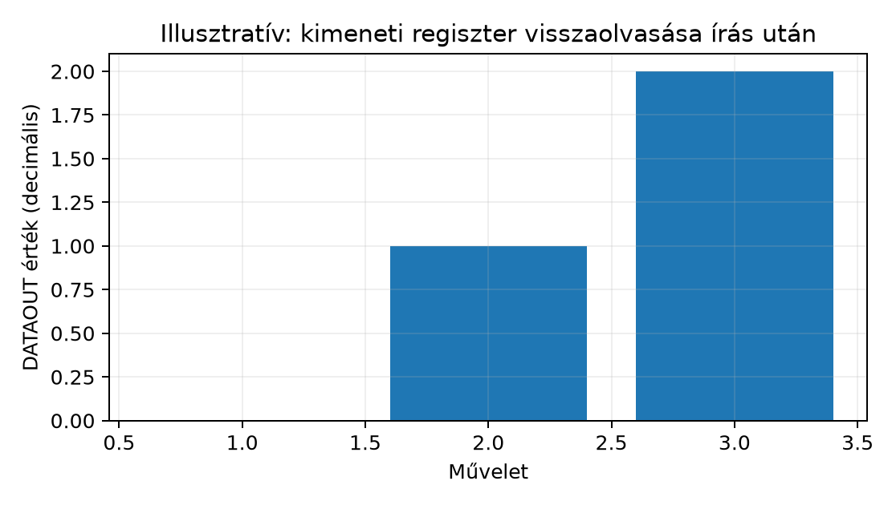

A memory-mapped I/O alapelve szerint a perifériaregisztereket ugyanúgy érhetjük el, mint a memóriát: load/store utasításokkal. Most ezt konkrét portára alkalmazzuk. Megnézzük, hogyan lesz egy GPIO-pin kimenet, hogyan állítunk be vagy törlünk egyetlen bitet a porta többi bitjének érintetlenül hagyásával, hogyan olvasunk bemenetet és ágazunk el az értékére, és hogyan lesz mindebből bitbanging – szoftveresen, ciklusokkal előállított jelsorozat.
A memory-mapped I/O önmagában csak annyit mond, hogy van egy
cím, amit írni lehet. A gyakorlati hardvervezérlés ennél több: egy 32
bites portán egyszerre 32 pin lakik, és jellemzően
egyetlen bitet akarunk megváltoztatni, a többit békén
hagyni. Ha a STR-rel a teljes szót felülírjuk, minden más
kimenet is áldozatul esik. Ez az alfejezet megmutatja a helyes
read-modify-write (RMW) mintát, összekapcsolva a logikai alapműveletek és bitmaszkolás szakaszban
tanult ORR/BIC maszkolással – azzal a fontos
különbséggel, hogy itt Thumb-2 / Armv7-M kontextusban
dolgozunk, nem A64-ben.
GPIO (General-Purpose Input/Output): olyan digitális periféria, amelynek minden csatlakoztatott lábát programozottan bemenetnek vagy kimenetnek lehet kijelölni, és kimenetként magas (1) vagy alacsony (0) szintre lehet hajtani.
Egy GPIO-porta regiszterkészlete tipikusan kétféle információt tárol:
OUTENSET (1-es a beállítandó bitre → kimenet lesz) és
OUTENCLR (1-es a törlendő bitre → bemenet lesz). Ez eleve
megkerüli az RMW-problémát az irányváltásnál.DATA és DATAOUT létezik: a
DATA olvasása a pad tényleges szintjét adja vissza, a
DATAOUT a legutóbb kiírt kimeneti értéket tárolja.Bitbanging: olyan technika, amikor egy protokoll vagy jelsorozat időzítését nem dedikált hardverperiféria (UART, SPI, I²C vezérlő), hanem maga a processzor állítja elő, közvetlen GPIO-írásokkal és szoftveres késleltetéssel. Következménye, hogy az időzítés pontossága a processzor ciklusidejétől és a megszakításoktól függ.
A fejezet célplatformja a
qemu-system-arm -machine mps2-an385, amely ARM MPS2+ AN385
FPGA-képet modellez, CMSDK perifériákkal. A GPIO-portok báziscíme és
regiszteroffszetjei az MPS2 dokumentált példatartományából
származnak:
| Port | Báziscím |
|---|---|
| GPIO0 | 0x40010000 |
| GPIO1 | 0x40011000 |
A regisztertérkép az Arm Cortex-M System Design Kit műszaki
leírásának 3-8. táblázatát (3.5.2) követi. Ugyanez a térkép a II. rész
egyetlen forrása a GPIO-offsetekhez: a periféria-struktúra lab-cmsdk-gpio.h
fejléce és az alábbi assembly-konstansok is ebből készültek, és a
záróprojekt is ezt a fejlécet használja.
| Offszet | Név | Típus | Szerep |
|---|---|---|---|
0x000 |
DATA |
RW | olvasás: a lábak tényleges szintje; írás: kimeneti adat |
0x004 |
DATAOUT |
RW | kimeneti adatregiszter (utolsó kiírt érték) |
0x008–0x00C |
— | — | fenntartott (két szó) |
0x010 |
OUTENSET |
RW | 1 a kívánt bitre → az a láb kimenet lesz |
0x014 |
OUTENCLR |
RW | 1 a kívánt bitre → az a láb bemenet lesz |
0x018 |
ALTFUNCSET |
RW | alternatív funkció engedélyezése |
0x01C |
ALTFUNCCLR |
RW | alternatív funkció letiltása |
0x020 |
INTENSET |
RW | megszakítás engedélyezése bitenként |
0x024 |
INTENCLR |
RW | megszakítás tiltása bitenként (nem nyugtázás) |
0x028 |
INTTYPESET |
RW | 1 → élvezérelt |
0x02C |
INTTYPECLR |
RW | 1 → szintvezérelt |
0x030 |
INTPOLSET |
RW | 1 → felfutó él / magas szint |
0x034 |
INTPOLCLR |
RW | 1 → lefutó él / alacsony szint |
0x038 |
INTSTATUS / INTCLEAR |
R / W1C | olvasás: függő megszakítások; írás: 1 a bitre → az eseményjelző törlése |
Platformtámogatás. A memory-mapped I/O alfejezet támogatási mátrixa szerint a QEMU 8.2.2
mps2-an385gépen a GPIO nincs implementálva. A regiszterek írása és visszaolvasása ott semmit nem igazol: egy nem modellezett tartomány 0-t ad vagy épp a beírt értéket tükrözi, és egyik sem jelenti, hogy egy láb kapcsolt. Ezért a futó GPIO-próba QEMU-nSKIP. Érdemben csak támogatott hardveren (fizikai MPS2+ kártya AN385 FPGA-képpel) futtatható. Egy más gyártói mikrokontroller (például STM32) GPIO-ja más regisztertérképet használ, a fenti offsetek ott nem érvényesek.
A DATAOUT regiszter egy teljes 32 bites szó. Egy pin
megváltoztatásához három lépés kell: olvasás, módosítás, visszaírás:
@ Thumb-2 / Armv7-M
LDR r2, [r0, #GPIO_DATAOUT] @ 1) olvas: aktuális kimeneti szó
ORR r2, r2, r1 @ 2) a kijelölt bit(ek) beállítása 1-re
STR r2, [r0, #GPIO_DATAOUT] @ 3) visszaírA törlés ugyanez BIC-kel, ahol
BIC r2, r2, r1 a maszkkal kijelölt biteket
nullázza, a többit megtartja:
LDR r2, [r0, #GPIO_DATAOUT]
BIC r2, r2, r1
STR r2, [r0, #GPIO_DATAOUT]Ez pontosan a a032 mintázata:
ORR beállít, BIC töröl, a maszk pedig
bitpozíciót jelöl. Két gyakorlati korlát azonban M-felé fokozottan
érvényes:
ORR/BIC immediate a modified
immediate (ThumbExpandImm) családból kódolható; például
0x80000001 nem írható le, ilyenkor regiszterbe töltött
maszk kell.Munkakönyvtár: ~/arm-labor/cm/a073/ —
az alfejezet minden laborfájlja ide kerül, és minden parancs innen
futtatandó (a könyvtárrendet a Labor-alapkörnyezet alfejezet írja le). A példa a
Linker script alapjai lab-mps2.ld
fájljára és a Startup kód
lab-startup.s fájljára épít; ezeket átmásoljuk, nem a
korábbi könyvtárakban dolgozunk tovább.
mkdir -p ~/arm-labor/cm/a073
cd ~/arm-labor/cm/a073
cp ~/arm-labor/cm/a065/lab-mps2.ld ~/arm-labor/cm/a066/lab-startup.s .A GPIO-műveletek implementált CMSDK GPIO perifériát és valódi
bemenetet feltételeznek. A QEMU 8.2.2 mps2-an385
modelljében a GPIO nincs implementálva; ott a fizikai be-/kimeneti próba
SKIP, és a regiszterek írása nem igazolja a lábak
működését. A program ezért egy LAB_HAVE_GPIO
build-kapcsolót kap (a lab-cmsdk-gpio.h alapértéke 0). A
fejlécet a periféria-struktúra alfejezet
határozza meg. Előkészítés (a labor előtt kötelező):
nyisd meg az a074 lab-cmsdk-gpio.h
kódblokkját, és mentsd el ugyanilyen néven az
~/arm-labor/cm/a074/ könyvtárba
(mkdir -p ~/arm-labor/cm/a074 után); ezután a másolás
sikerül:
mkdir -p ~/arm-labor/cm/a074 # az a074 fejléce ide kerül (kanonikus hely)
cp ~/arm-labor/cm/a074/lab-cmsdk-gpio.h .A lab-gpio-bitbang.s GPIO0 pin0-t kimenetként
villogtatja, és megvárja, amíg a pin1 (bemenet) magas szintre nem
billen.
@ lab-gpio-bitbang.s — Cortex-M / Thumb-2 (Armv7-M)
.syntax unified
.thumb
@ CMSDK GPIO offsetek — ugyanaz a térkép, mint a lab-cmsdk-gpio.h-ban (a074)
.equ GPIO_DATA, 0x000
.equ GPIO_DATAOUT, 0x004
@ 0x008-0x00C: fenntartott
.equ GPIO_OUTENSET, 0x010
.equ GPIO_OUTENCLR, 0x014
.equ GPIO_ALTFUNCSET, 0x018
.equ GPIO_ALTFUNCCLR, 0x01C
.equ GPIO_INTENSET, 0x020
.equ GPIO_INTENCLR, 0x024
.equ GPIO_INTTYPESET, 0x028
.equ GPIO_INTTYPECLR, 0x02C
.equ GPIO_INTPOLSET, 0x030
.equ GPIO_INTPOLCLR, 0x034
.equ GPIO_INTSTATUS, 0x038 @ olvasás: INTSTATUS, írás: INTCLEAR (W1C)
.equ GPIO0_BASE, 0x40010000
.text
@ void gpio_out_enable(uint32_t base, uint32_t pin); r0=base, r1=pin
.global gpio_out_enable
.thumb_func
gpio_out_enable:
MOVS r2, #1
LSL r2, r2, r1 @ pinindex -> bitmaszk
STR r2, [r0, #GPIO_OUTENSET]
BX lr
@ void gpio_set(uint32_t base, uint32_t mask);
.global gpio_set
.thumb_func
gpio_set:
LDR r2, [r0, #GPIO_DATAOUT]
ORR r2, r2, r1
STR r2, [r0, #GPIO_DATAOUT]
BX lr
@ void gpio_clear(uint32_t base, uint32_t mask);
.global gpio_clear
.thumb_func
gpio_clear:
LDR r2, [r0, #GPIO_DATAOUT]
BIC r2, r2, r1
STR r2, [r0, #GPIO_DATAOUT]
BX lr
@ uint32_t gpio_read_input(uint32_t base, uint32_t mask);
.global gpio_read_input
.thumb_func
gpio_read_input:
LDR r2, [r0, #GPIO_DATA] @ a pad tényleges szintje
AND r0, r2, r1 @ 0 vagy mask
BX lr
@ void delay(void); durva, szoftveres késleltetés (illusztratív)
.global delay
.thumb_func
delay:
LDR r1, =0x00080000
delay_loop:
SUBS r1, r1, #1
BNE delay_loop
BX lr
@ void wait_button(uint32_t base, uint32_t mask); vár magas szintre
.global wait_button
.thumb_func
wait_button:
PUSH {r4, r5, r6, lr}
MOV r4, r0
MOV r5, r1
wait_loop:
MOV r0, r4
MOV r1, r5
BL gpio_read_input
CMP r0, #0
BEQ wait_loop @ 0 -> még alacsony, újraolvasunk
POP {r4, r5, r6, pc}
@ void gpio_demo(void);
.global gpio_demo
.thumb_func
gpio_demo:
PUSH {r4, lr}
LDR r4, =GPIO0_BASE
MOV r0, r4 @ pin0 = kimenet
MOVS r1, #0
BL gpio_out_enable
MOV r0, r4 @ pin1 bemenet marad (default)
MOVS r1, #2 @ 0b10 -> pin1 maszkja
BL wait_button
MOV r0, r4 @ rövid magas impulzus pin0-n
MOVS r1, #1
BL gpio_set
BL delay
MOV r0, r4
MOVS r1, #1
BL gpio_clear
POP {r4, pc}A futtatást egy rövid C main vezérli, amely a
gpio_demo-t csak LAB_HAVE_GPIO = 1 mellett
hívja, egyébként SKIP-et ír ki semihostingon:
/* lab-gpio-main.c — a gpio_demo futtatása csak támogatott platformon */
#include "lab-cmsdk-gpio.h"
void gpio_demo(void);
static void sh_call(uint32_t op, const void *arg)
{
register uint32_t r0 asm("r0") = op;
register const void *r1 asm("r1") = arg;
asm volatile ("bkpt 0xab" : "+r"(r0) : "r"(r1) : "memory");
}
int main(void)
{
#if LAB_HAVE_GPIO
gpio_demo(); /* pin1-re vár, majd impulzus pin0-n */
sh_call(0x04u, "gpio_demo: kesz\n");
#else
sh_call(0x04u, "SKIP: GPIO nincs implementalva ezen a platformon (LAB_HAVE_GPIO=0)\n");
#endif
sh_call(0x18u, (const void *)0x20026u); /* SYS_EXIT */
for (;;) { }
}Build és futtatás. A firmware build és QEMU-betöltés munkafolyamat szerint, a startup kód mellé linkelve:
# QEMU-alapút: a GPIO-próba SKIP
arm-none-eabi-gcc -mcpu=cortex-m3 -mthumb -ffreestanding -nostdlib -O1 \
-T lab-mps2.ld -o lab-gpio.elf lab-startup.s lab-gpio-bitbang.s lab-gpio-main.c
qemu-system-arm -M mps2-an385 -cpu cortex-m3 -nographic -semihosting \
-kernel lab-gpio.elf
# Támogatott hardveren (MPS2+ AN385): ugyanez -DLAB_HAVE_GPIO=1 kapcsolóval,
# a debuggeren keresztül, semihostinggalA QEMU-alapút kimenete a helyettesítő eszközlánccal (Clang +
ld.lld) és a tools/cm-run.py emulátorral
mérve, amely a GPIO-tartományt a QEMU-hoz hasonlóan nem modellezi (0-t
olvas, az írást eldobja):
SKIP: GPIO nincs implementalva ezen a platformon (LAB_HAVE_GPIO=0)Ellenpróba: miért nem elég „megpróbálni”. Ugyanezt a
programot -DLAB_HAVE_GPIO=1-gyel a nem modellezett GPIO-n
futtatva a wait_button örökké vár, mert a DATA
mindig 0-t ad; az emulátor az utasításlimitnél állt le. Sem az írás, sem
a visszaolvasás nem árulja el, hogy a periféria hiányzik; ezt csak a
támogatási mátrix és a build-kapcsoló kezeli megbízhatóan.
Hardveren, GDB-vel (a II. rész egységes
-S -gdb tcp::3333 / target remote :3333
mintája helyett ott a debugprobe GDB-szervere a cél):
(gdb) break gpio_set
(gdb) continue
(gdb) info registers r0 r1 r2
(gdb) x/2xw $r0Várt állapot támogatott hardveren. A
gpio_set belépésénél r0 = 0x40010000,
r1 = 0x00000001. A STR után a
0x40010004 (DATAOUT) címen
0x00000001 olvasható, és a 0x40010010
(OUTENSET) visszaolvasva a pin0 bitjét mutatja. A
gpio_read_input a DATA regiszterből
(0x40010000) olvas, és AND-del izolálja a kért
bitet; a CMP r0, #0 utáni BEQ wait_loop addig
ismétel, amíg a pin1 magas nem lesz. Ezeket az értékeket QEMU-n nem
lehet ellenőrizni; ott a próba SKIP.

| Tünet | Hipotézis | Adatgyűjtés | Egy változtatás |
|---|---|---|---|
| rossz pin vált, más nem | pinindexet adtunk át maszk helyett | GDB: p/x $r1 a gpio_set-ben |
LSL-lel maszkká alakítani, vagy maszkot átadni |
| semmi nem történik a kimeneten | elmaradt OUTENSET (a láb bemenet maradt), vagy a régi,
hibás 0x008 offsetre írtunk |
x/1xw 0x40010010 (hardveren) |
gpio_out_enable a kiírás előtt,
GPIO_OUTENSET = 0x010 |
| a QEMU-n a demó „lefagy” | a GPIO nincs implementálva, a DATA mindig 0 |
támogatási mátrix (a072) | LAB_HAVE_GPIO = 0, a próba SKIP |
| az egyik másik kimenet is átbillen | teljes szó felülírása STR-rel RMW helyett |
olvassuk ki a DATAOUT-ot írás előtt/után |
ORR/BIC RMW bevezetése |
| a beolvasott érték mindig 0 | DATAOUT-ot olvastunk DATA helyett |
nézzük a load offszetjét | [r0, #GPIO_DATA] |
ORR nem fordul le |
kódolhatatlan immediate | hibaüzenet: „invalid immediate” | maszk betöltése regiszterbe |
1. (magyarázó, alapszint — cél: megértés-ellenőrzés)
Mutasd be lépésenként, miért nem atomi a LDR/ORR/STR minta,
és magyarázd el, miért oldja meg a
OUTENSET/OUTENCLR az irányváltás
RMW-problémáját, míg az adatírásnál miért nem áll rendelkezésre
ilyen.
2. (implementációs, alapszint — cél: rutinépítés)
Írj
void gpio_write_pin(uint32_t base, uint32_t pin, uint32_t value)
függvényt, amely value != 0 esetén beállítja, különben
törli a pinnel jelölt bitet, a többi bitet érintetlenül hagyva.
3. (hibakeresési/mérési, középszint — cél:
rutinépítés) A megadott gpio_demo verzióban a
wait_button helyett gpio_read_input hívás
r1 = 1 (pin0 maszkja) értékkel szerepel. Add meg, hogy
milyen viselkedést várunk, és javítsd a kódot.
4. (integráló, elmélyült — cél: fejezetek összekapcsolása: ISR írása: C és assembly vegyesen + a jelen fejezet
nem-atomi RMW-korlátja) Tegyük fel, hogy a
gpio_set/gpio_clear rutint a main
ciklus és egy Timer-ISR (a070
TIMER0_IRQHandler mintájára) is hívja, ugyanarra a
GPIO-portra. Írd le pontosan, milyen utasítássorrend vezet elveszett
frissítéshez (lost update), ha a hardveres kivétel-belépés éppen a
main() LDR és STR utasítása közé “ékelődik
be”. Mivel a Thumb-2 LDR/ORR/STR több különálló utasításból
áll, bármelyik köztes ponton megszakítható — nincs itt egyetlen atomi
RMW-utasítás. Milyen védekezési stratégiát javasolnál?
1. megoldás — Segítség. Gondold át, mi történik, ha
két végrehajtási szál ugyanazt a pillanatképet olvassa be
LDR-rel, mielőtt bármelyikük visszaírna — majd nézd meg,
hogy az OUTENSET/OUTENCLR miért nem igényel
előzetes olvasást.
1. megoldás — Teljes megoldás. Az
LDR-rel beolvasott érték egy pillanatkép. Két konkurens író
ugyanazt a pillanatképet kapja, mindkettő módosít, és a későbbi
STR felülírja az előzőt: elveszett frissítés. Az
OUTENSET/OUTENCLR éppen azért külön regiszter,
hogy a hardver belül végezze a bitekérték szerinti módosítást, és a sw
csak 1-eseket írjon a kívánt pozíciókra; nem kell visszaolvasni. Az
adatregiszternél ilyen SET/CLR pár a CMSDK GPIO-n nem áll rendelkezésre,
ezért ott RMW-t kell végezni, és ha a portát több kontextus is írja,
szoftveres kölcsönös kizárás vagy kritikus szakasz szükséges.
2. megoldás — Segítség. A meglévő
gpio_set/gpio_clear rutinok már elvégzik a
maszkolt RMW-t; a feladat csak egy elágazás a value
alapján, a megfelelő meglévő rutin hívásával.
2. megoldás — Teljes megoldás.
@ void gpio_write_pin(uint32_t base, uint32_t pin, uint32_t value)
.global gpio_write_pin
.thumb_func
gpio_write_pin:
PUSH {r4, lr}
MOV r4, r0
MOVS r3, #1
LSL r1, r3, r1 @ 1 << pin
CMP r2, #0
BEQ 1f
MOV r0, r4
BL gpio_set
POP {r4, pc}
1: MOV r0, r4
BL gpio_clear
POP {r4, pc}A LSL r1, r1, r1 tömör, de olvashatóság kedvéért külön
regiszterbe érdemes másolni. A lényeg, hogy az ág mindkét esetben a
meglévő ORR/BIC maszkoló rutinra épül, így a
többi bit érintetlen marad.
3. megoldás — Segítség. Nézd meg, melyik pinhez
tartozik az átadott maszk, és hogy az a pin éppen bemenet-e vagy kimenet
— a wait_button csak bemeneti pin változására adhat
értelmes választ.
3. megoldás — Teljes megoldás. A
wait_button gpio_read_input-ot hívja
mask = 1-gyel (pin0). Mivel pin0 épp a kimenet, a
DATA olvasása a saját kimeneti szintet adja vissza; a
ciklus azonnal vagy soha nem teljesül a gomb állapotától függetlenül. A
javítás: a gomb maszkja 0b10, azaz
MOVS r1, #2. Ez a klasszikus „rossz maszk” hiba, amelyet a
pinindex-maszk összekeverése okoz.
4. megoldás — Segítség. Kövesd nyomon lépésről
lépésre: main() már elvégezte az LDR-t (pillanatkép
r2-ben), amikor megszakítás érkezik — mit lát és mit ír az
ISR a DATAOUT-ban, és mit ír végül vissza main() a saját, már elavult
pillanatképéből?
4. megoldás — Teljes megoldás. A main()
ciklus LDR r2, [r0, #GPIO_DATAOUT]-pal beolvassa a
DATAOUT aktuális értékét egy pillanatképbe
(r2). Mielőtt az ORR/BIC +
STR lefutna, a Timer-ISR megszakítja a folyamot — a070 szerint a hardver automatikusan a verembe
menti R0–R3, R12,
LR, PC, xPSR-t, majd a kezelő
fut. Ha az ISR maga is hívja a
gpio_set/gpio_clear rutint ugyanarra a portra,
a saját LDR/ORR/STR szekvenciája lefut, és sikeresen
frissíti a DATAOUT-ot. A megszakításból visszatérve a
main() ciklus folytatja a saját, már elavult
r2 pillanatképével: erre alkalmazza a saját
ORR/BIC-jét, majd STR-rel
visszaírja — ezzel felülírja (eltörli) az ISR által közben elvégzett
módosítást. Ez pontosan az elveszett frissítés (lost update), amelyet a
fejezet 1. korlátja általánosan már megemlít, itt konkrét
ISR-kontextusban. Védekezés: vagy a megszakítások rövid letiltása
(CPSID i/CPSIE i) a main()
RMW-szekvenciája köré kritikus szakaszként — ugyanaz az elv, mint a070 megosztott
g_tick/g_pending változóinak védelme —, vagy
ha a hardver kínálna dedikált SET/CLR regisztert DATAOUT-ra
(ahogy OUTENSET/OUTENCLR már van az
iránybitekhez), azt kellene használni RMW helyett, mert az a hardver
szintjén atomi.
A GPIO-pin vezérlése három regiszter köré szerveződik: irány
(OUTENSET/OUTENCLR), adat
(DATA/DATAOUT). Egy bit megváltoztatása M-felé
RMW-minta: LDR + ORR (beállítás) vagy
BIC (törlés) + STR, ami nem atomi. A bemenetet
a DATA adja vissza, és CMP után feltételes
elágazással dolgozunk fel. A bitbanging szoftveresen, késleltetéssel
állítja elő a jelsorozatot, ezért időzítése nem cikluspontos.
Továbbhasznált definíciók:
A linkek és a dokumentumverziók közös állapota az Olvasói útmutató forrásállapot-táblájában van; itt csak az alfejezet saját megállapításai szerepelnek.
ORR/BIC, load/store immediate-korlátok.
Ellenőrizve: a link él, de a fejezetszám és a
kiadásbetű az Arm-oldalak közös korlátja miatt nem ellenőrzött.mps2-an385 machine és a modellezett
perifériák leírása;
qemu-system-arm -M mps2-an385 -monitor stdio +
info mtree az ellenőrzéshez. Ellenőrizve:
a master ág dokumentációja (közös verziókorlát).Ellenőrzési hiányok, amelyek a fenti ellenőrzés után is
fennmaradnak: A regisztertérkép a CMSDK műszaki leírás 3-8.
táblázatát követi (a lektor ellenőrzése alapján javítva: a
0x008–0x00C fenntartott, az
OUTENSET a 0x010-en van). A
lab-gpio-bitbang.s-t és a lab-gpio-main.c-t a
helyettesítő eszközlánccal lefordítottuk; a SKIP-ág és a
nem modellezett GPIO-n végtelen várakozó ág az emulátorban ténylegesen
lefutott. A hardveres próba (a lábak tényleges kapcsolása, a
DATAOUT/OUTENSET visszaolvasása) támogatott
hardveren végzendő, ebben a munkafolyamatban nem történt meg. Az Ubuntu
24.04 helyi csomagolt toolchain- és QEMU-verzió, valamint a fizikai
STM32 Nucleo viselkedése ettől eltérhet, és külön jelölést kíván.